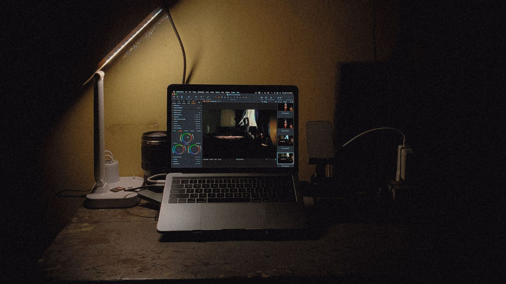
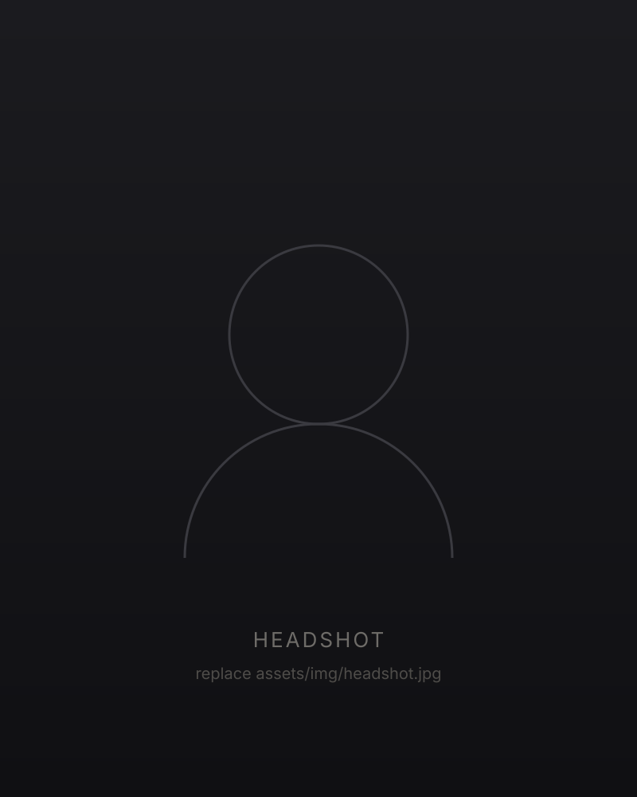
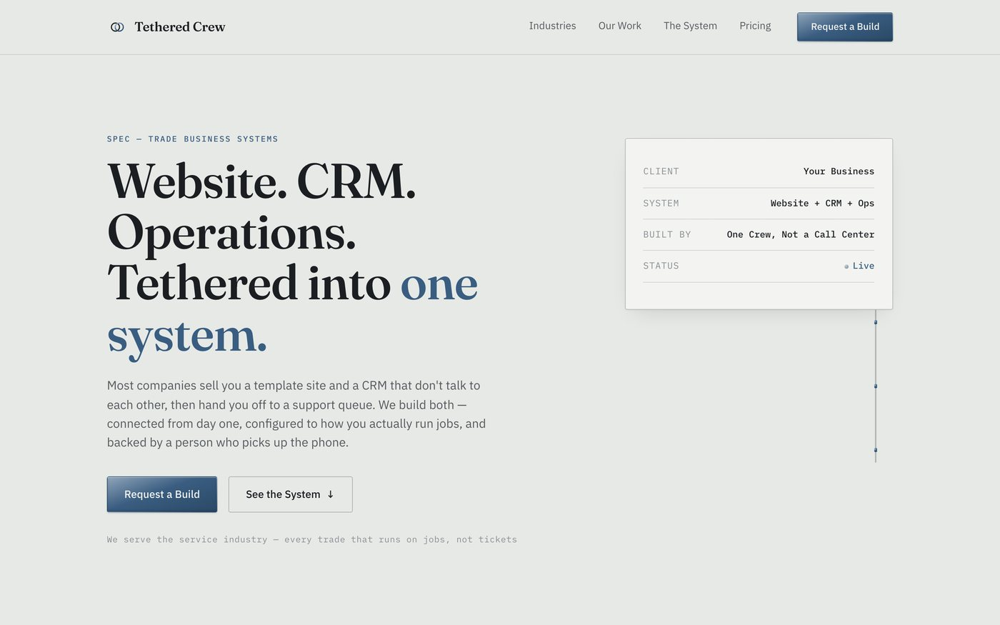
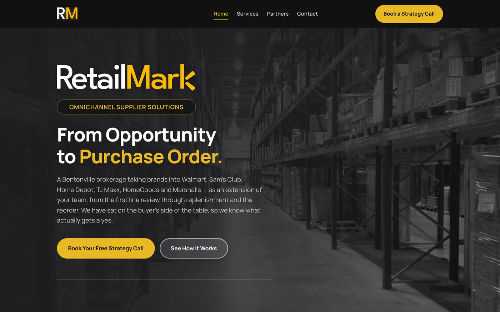
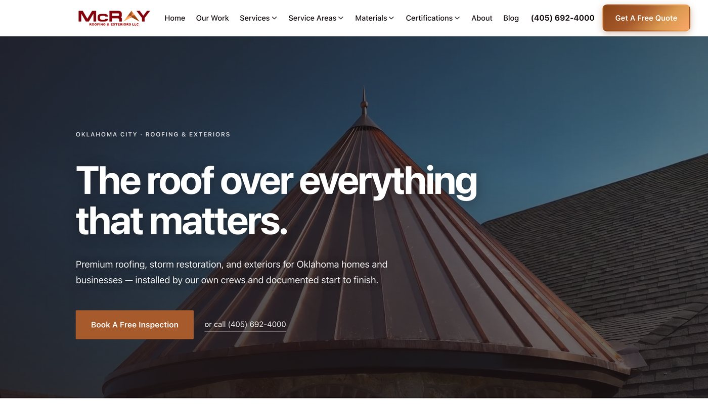

Portfolio · Southern Nazarene University
Caleb Roach
Storytelling through film, design, and code.
A Communications and Design student building brand films, websites, and the software small businesses actually run on.
01 · Welcome

Hello, and welcome to my portfolio.
My name is Caleb Roach, and I’m a Communications and Design student at Southern Nazarene University in Oklahoma City.
I’ve always liked the part of a project where the story and the technology meet, and I couldn’t really pick one, so I ended up doing both. I shoot and edit video, I design and build websites, and I co-founded a small studio with a friend that sells both of those to local businesses. What I like most is getting to follow something the whole way through, from the first conversation with a client to the day it actually goes live.
On this site you’ll find the projects I’ve finished, the skills behind them, and where I’m hoping to go after graduation. It’s still growing, and I’ll keep adding to it as I get more work done, but I think this is a pretty good picture of where I’m at right now. Thanks for taking the time to look around.
- StudyingCommunications & Design
- UniversitySouthern Nazarene
- Based inOklahoma City, OK
- FocusVideo, Web, Business
02 · What I Do
Three disciplines, one standard.
-
01
Video Production
Brand films, event coverage, and post production. I shoot, edit, and color grade my own work, which keeps the story consistent from the first frame to the final export.
-
02
Web Design & Development
Marketing sites and custom business software, designed and deployed. I handle the layout, the writing, the code, and the server, so a client only has to talk to one person.
-
03
Business & Communication
Co-founder of a two person studio with paying clients. Scoping, pricing, proposals, and the ongoing client relationship are as much of the job as the design itself.
03 · Selected Work
A few things I’ve built.
I’m still writing up the full case studies, but here’s a look at three of the projects I’ve finished recently.
-

Tethered Crew
Brand, Website, and Product · 2026
The studio I co-founded with a friend. I designed the brand, wrote the copy, built the site, and set up the hosting it still runs on today.
Visit tetheredcrew.com -

RetailMark
Website and Client Software · 2026
A full site rebuild for a retail brokerage, plus the internal tool their team uses to track suppliers. This was my first real project for a paying client outside of my own company, and it taught me a lot.
Visit retailmark.com -

McRay Roofing & Exteriors
Website Redesign · 2026
A ground up redesign of the website for the company I work for, covering the layout, the photography, and the lead form that feeds their sales team. It’s in review right now, before launch.
Preview available on request.
04 · Contact
Let’s talk.
I’m always glad to hear from potential employers, clients, and anyone who’s working on something interesting, so feel free to reach out. Email is easily the fastest way to get me.
caleb@tetheredcrew.com